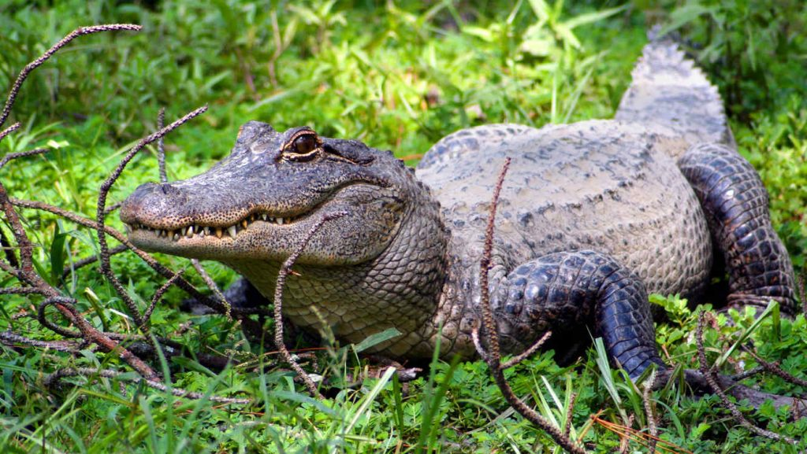
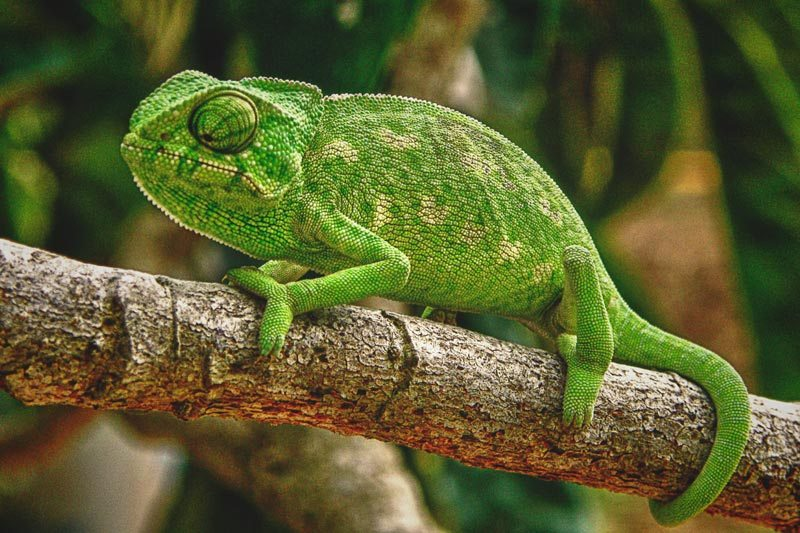
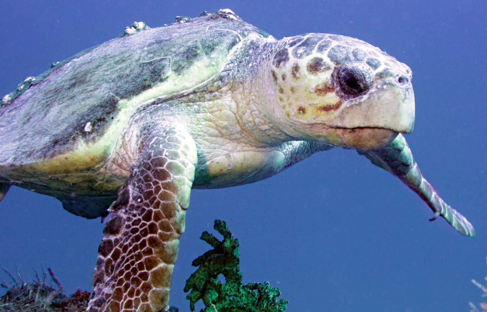
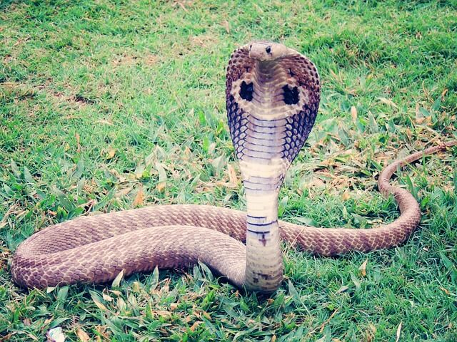
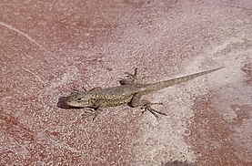

Caiman Camale�n Tortuga Boba Cobra Real Lagartija PAGINA PRINCIPAL

Los caimanes habitan de manera repetida distribuidor en las regiones de Am�rica abarcando todas las zonas que van desde Sudam�rica hasta M�xico y un poco de Am�rica del Norte en la zona sur. se pueden encontrar a lo largo de las riberas de los r�os y arroyos, pero especialmente prosperan en lagos de llanuras aluviales, humedales y otros h�bitats inundados con una cubierta vegetal densa y preferencia por corrientes lentas.
CARACTERISTICAS
- Los caimanes forman la familia Alligatoridae junto con los alig�tores.
- Son de menor tama�o que los cocodrilos.
- Son de car�cter algo m�s apacible que los cocodrilos.
- Solo habitan zonas de agua dulce en regiones subtropicales.
- Se alimentan de peces, aves, mam�feros e incluso insectos o anfibios, pues pese a su tama�o, son animales que gestionan su energ�a de forma muy eficiente, as� que en realidad precisan de muy poco alimento.
Regresar a men� 
La mayor parte de los camaleones habitan en �frica y en Madagascar, aunque algunas especies tambi�n se encuentran en partes del sur de Europa, Sri Lanka, India y Asia Menor. Diferentes especies habitan diferentes ambientes, como monta�as, junglas, sabanas y a veces desiertos y estepas. Se cree que los individuos que viven en los sectores mediterr�neos europeos derivan de ejemplares introducidos por el hombre en �pocas remotas. Los camaleones viven, en su mayor parte, en ambientes forestales, pero tambi�n se hallan algunos en matorrales, y algunas especies viven en el suelo, debajo de las hojas. Pueden pasar de un �rbol a otro gracias a la habilidad prensil de su cola y de sus patas.
CARACTERISTICAS Aspectos que caracterizan a los camaleones es que poseen unos ojos grandes, capaces de moverse tan independientes, que le dan una vista de casi 360 grados. Su lengua, tambi�n le da un toque de particularidad. Es alargada y gracias a su punta pegajosa, es capaz de cazar a todas las presas que se les antojen, a una velocidad muy r�pida. Para montarse por las ramas de los �rboles con mayor facilidad, esta especie tiene las patas divididas en dos �nicos dedos. Mientras que su cola prensil tambi�n le da la capacidad de sujetarse de las ramas, como una de sus medidas de seguridad. A pesar de que son r�pidos para alimentarse estos animales carn�voros, para movilizarse resulta todo lo contrario. Hasta pueden quedarse inm�viles por varias horas.Regresar a men� 
es muy probable encontrar tortugas bobas en todos los oc�anos del mundo (Atl�ntico, Pacifico, �ndico) y en el Mar Mediterr�neo, teniendo mayor o menor presencia dependiendo de cu�l se trate. La mayor concentraci�n de estas tortugas est� en el Atl�ntico, encontr�ndose entre las Costas de Norteam�rica y el Golfo de M�xico. En el Mar Mediterr�neo esta es la especie de tortugas marinas con m�s presencia.
CARACTERISTICAS Las tortugas bobas son de las tortugas marinas m�s grandes que hay, en su adultez pueden llegar a medir m�s de 1 metro de largo y llegar a pesar hasta 200 kilogramos. Sin embargo, estas medidas dependen totalmente del oc�ano en el cual habiten, por esto las tortugas bobas del Oc�ano Atl�ntico son m�s grandes que las del Mediterr�neo. Por ejemplo, la tortuga boba m�s grande encontrada pes� 545 Kilogramos. Tienen una cabeza muy grande, raz�n por la que tambi�n son conocidas como tortugas cabezonas. Su caparaz�n es fuerte y resistente, el cual sirve de armadura para protegerse de posibles depredadores marinos, y adem�s es el refugio de otros organismos como peque�os cangrejos.Regresar a men� 
La cobra real habita de manera especial los bosques subtropicales del sureste asi�tico donde radica en madrigueras o bien arbustos gruesos. Prefiere los bosques de altura espesos que salpican con agua o bien lagos, y asimismo se pueden localizar en los pastizales. Por lo general, las viboras cobras ocupan matorrales de bamb� llenos de presas potenciales o bien manglares espesos en zonas de anidaci�n son rebosantes. Prefieren un tiempo h�medo donde la temperatura es de cerca de 35 grados cent�grados. En consecuencia, la v�bora puede encontrarse de manera frecuente en las zonas subtropicales. Debido a la destrucci�n del h�bitat, muchas cobras rey escapan cara �reas agr�colas y por tanto se exponen a los humanos. Esto ha dado sitio a m�ltiples incidentes en los que o son asesinados, capturados o bien los ataques de v�boras como una acci�n de autodefensa.
CARACTERISTICAS El aspecto m�s destacable de esta serpiente es, por supuesto, su enorme tama�o. Aunque su longitud media est� entre los 3 y 4 metros, algunos ejemplares pueden alcanzar los 5 metros y medio. Esto la convierte en la serpiente venenosa m�s grande del mundo. Cuando son adultas, su color suele ser negro, marr�n, verde o amarillo. Generalmente, las cobras reales son m�s oscuras por la parte dorsal que por la ventral y pueden presentar alg�n patr�n rayado o ser s�lidas. Los patrones y colores m�s impresionantes est�n situados en la �capucha� que despliegan cuando se sienten amenazadas. El cuerpo de estas serpientes es bastante robusto. La cabeza es grande, ancha y cuenta con 2 grandes ojos, que le dan una mirada severa e intensa. Su dentici�n es proteroglifa: los colmillos curvados que inoculan el veneno no son muy grandes, est�n en la mand�bula superior y no son m�viles.Regresar a men� 
La lagartija est� adaptada a vivir en zonas c�lidas o templadas. Existen muchas especies, aunque todas coinciden en dos necesidades b�sicas: tener acceso a los rayos del sol para poder calentarse y disponer de lugares donde poder esconderse y protegerse de sus depredadores. Las m�s comunes suelen encontrarse en zonas rocosas, aunque tambi�n es f�cil verlas entre los matorrales, praderas, bosques bajos o en las ciudades.
CARACTERISTICAS La lagartija puede alcanzar un promedio de 10 a�os de vida y a medir hasta 10 cm, sin incluir la cola. Esta cola es m�s larga que el cuerpo y en algunos casos puede triplicar su longitud, como sucede con la lagartija colilarga (Psammodromus algirus). Adem�s, tienen la capacidad de desprenderse de su estructura m�s larga -la cola- al intentar escapar de sus depredadores. En cuanto a su piel, est� cubierta de escamas diminutas con mayor preponderancia en el dorso que en el abdomen. Los colores y tonalidades oscilan entre el verde oscuro, verde claro y pardo. Machos y hembras pueden distinguirse debido a que los primeros poseen coloraciones m�s brillantes; en tanto, las hembras cuentan con tonalidades opacas.Regresar a men�